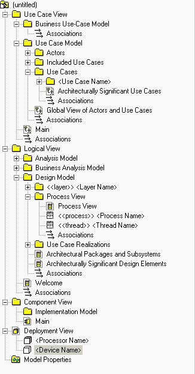

Overview
SoDA automates the generation of the report so that it is created quickly and accurately. You can generate a Software
Architecture Document with either the Microsoft® Word® or Adobe® FrameMaker® version of SoDA. To create this report,
SoDA collects architecturally significant aspects from a Rational Rose model. This works only if the model follows the
structure and naming convention
for the Rose model.
Related Rational Unified Process information:
This tool mentor is applicable when running Windows 2000, NT 4.0, Windows XP, Solaris, or HP-UX.
To create a the Software Architecture Document using SoDA, use the procedure for your version of the product:
-
From anywhere in Rational Rose, click Report > SoDA Report.
-
When the list of available reports appears in SoDA, select Rational Unified Process Software Architecture
Document.
-
Click OK to generate the report.
-
From the FrameMaker button-bar, click New. Double-click SoDA, then double-click RoseDomain and
choose the RUPSoftwareArchitectureDocument.fm template.
-
Edit the Connector and enter the name of the model.
-
Click File > Save As to save the template to a personal or project directory.
You may want to change the name of the template to reflect the name of the use case; for example,
ConductTransactionsReport.fm.
-
Click SoDA > Generate Document.
-
Review the generated document.
The next time you want to generate this same document, simply open the document and click SoDA > Generate
Document.
|

|
The following lists the diagrams that SoDA extracts from the Rose model for inclusion in the Software
Architecture Document:
-
The use cases and actors that are architecturally significant are shown in the Use-Case View
section of the document.
-
The classes, interfaces, packages, and subsystems that are architecturally significant are
shown in the Logical View section of the document.
-
The packages that represent layers in the design model are shown in the Logical View section of
the document.
-
Any diagram in the Process View package is shown in the Process View section of the document.
-
Any diagram in the Implementation Model package is shown in the Implementation View section of
the document.
-
Any diagram in the Deployment View is shown in the Deployment View section of the
document.
|
|